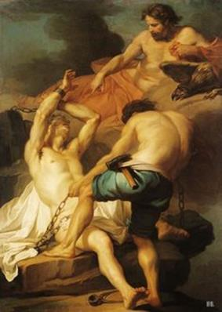

Prométhée đã lấy ngọn lửa hồng thiêng liêng, báu vật riêng có của các vị thần đem trao cho loài người. Việc làm đó khiến thần Zeus, đấng phụ vương của các thần và người trần thế, căm tức đến điên đầu sôi máu. Zeus phải trừng phạt loài người để cho Prométhée biết rằng Zeus là một kẻ có quyền lực, rằng sự hy sinh tận tụy của Prométhée cho cuộc sống của loài người là vô ích. Tuy loài người trở thành bất tử nhờ ngọn lửa của Prométhée nhưng tội ác và tai họa cùng với biết bao điều xấu xa, điên đảo cũng trở thành người bạn đường bất tử của loài người. Vì lẽ đó loài người chẳng thể có được cuộc sống đạo đức, văn minh, hạnh phúc như Prométhée mong muốn. Zeus phải trừng phạt Prométhée để cho loài người biết cái giá phải trả cho hành động táo tợn, phạm thượng, dám cướp đoạt báu vật thiêng liêng độc quyền của thần thánh, ngọn lửa hồng không mệt mỏi, là đắt đến như vậy. Những kẻ nào nuôi giữ tấm lòng thương yêu loài người, hằng ham muốn thay đổi số phận loài người hãy lấy đó làm gương.
Zeus ra lệnh bắt Prométhée giải đến một đỉnh núi cao chót vót trong dãy núi Caucase, xiềng chặt Prométhée vào đó. Héphaïstos, vị thần Thợ Rèn danh tiếng, trước đây đã sáng tạo ra người thiếu nữ Pandore, nay đảm nhận việc đóng đanh xiềng Prométhée vào núi đá. Prométhée bị đày đọa, ban ngày dưới nắng bỏng cháy da, ban đêm dưới sương tuyết rét buốt thấu xương. Chưa hết, ngày ngày Zeus còn sai một con đại bàng có đôi cánh rộng và dài đến mổ bụng ăn buồng gan của Prométhée. Zeus tưởng rằng dùng những cực hình đó, Prométhée sẽ phải khuất phục quy hàng mình, Prométhée sẽ phải từ bỏ lòng thương yêu loài người và thái độ chống đối đầy kiêu hãnh và thách thức đối với Zeus và thế giới thần linh. Nhưng Prométhée vẫn là Prométhée, trước sau như một không hề run sợ đầu hàng Zeus. Và thật là kỳ diệu và lạ lùng biết bao, buồng gan của Prométhée cũng bất tử như Titan Prométhée! Ban ngày con ác điểu ăn đi bao nhiêu thì ban đêm buồng gan của Prométhée lại mọc lại bấy nhiêu, nguyên vẹn, tươi mới, không hề mang dấu vết của một sự tổn thương, xúc phạm nào.

Thần Thợ Rèn Héphaïstos xiềng Prométhée trên đỉnh núi
Prométhée biết trước số phận của Zeus: Nếu Zeus lấy nữ thần Thétis66, một nữ thần Biển, thì đứa con trai, kết quả của cuộc hôn nhân này, lớn lên sẽ lật đổ ngôi báu của cha nó giành lấy quyền cai quản thế giới thần linh và loài người như xưa kia cha nó đã từng làm đối với ông nó, Cronos. Quả thật là một sự hiểu biết vô cùng quý báu, có thể nói là vô giá đối với Zeus. Zeus mà biết được điều này thì hẳn rằng hắn sẽ càng hống hách, kiêu căng tàn bạo hơn nữa. Nhưng Zeus không biết. Đúng hơn Zeus chỉ biết có một nửa, nghĩa là Zeus chỉ biết con mình sẽ lật đổ mình, cướp ngôi của mình. Nhưng đứa con ấy do người vợ nào, nữ thần nào kết duyên với Zeus sinh ra thì Zeus không biết. Thế giới thần thánh của đỉnh Olympe có biết bao nhiêu vị nữ thần: Aphrodite, Athéna, Thétis, Déméter, Artémis, ba chị em Moires vân vân và vân vân, biết tránh ai và lấy ai? Đó chính là điều Zeus vô cùng quan tâm và hết sức lo lắng. Zeus tưởng rằng cứ xiềng Prométhée vào núi đá, đày đọa Prométhée, dùng con ác điểu tra tấn hành hạ Prométhée thì đến một ngày nào đó, Prométhée phải van xin Zeus tha tội, Prométhée phải khai báo cho Zeus biết tỏ tường điều bí ẩn mà Prométhée bấy lâu vẫn giấu kín. Nhưng Zeus đã tính lầm. Hàng bao thế kỷ trôi qua, Prométhée vẫn không hề nao núng, nhượng bộ Zeus. Cuối cùng chính Zeus phải khuất phục trước sức mạnh ý chí của Prométhée. Zeus phải hàng phục Prométhée.
Người anh hùng Héraclès dòng dõi của nàng Io lãnh sứ mạng giải phóng Prométhée. Sau bao nỗi gian truân thử thách với những chiến công cực kỳ phi thường, cực kỳ vĩ đại, chàng đã đến đỉnh núi cao chót vót Caucase. Bằng một mũi tên thần, Héraclès giết chết con ác điểu. Thần Zeus bất lực, đành phải cởi bỏ xiềng xích cho Prométhée. Và chỉ đến lúc đó Prométhée mới nói cho Zeus biết điều bí mật. Nhưng để khỏi mang tiếng là người đã cam chịu thất bại trước ý chí kiên định của Prométhée, Zeus sai thần Thợ Rèn Héphaïstos rèn một vòng sắt nhỏ và gắn lên trên đó một miếng đá con con để cho Prométhée đeo vào ngón tay như là vẫn xiềng Prométhée vào núi đá!
Ngày nay trong văn học thế giới Ngọn lửa Prométhée (Le feu de Prométhée; Le feu Prométhéen) tượng trưng cho tự do, văn minh, tiến bộ, tượng trưng cho cuộc đấu tranh kiên cường, bất khuất chống lại ách áp bức, bóc lột và thói tàn bạo đối với con người. Tư tưởng Prométhée (Esprit de Prométhée), Tinh thần Prométhée (Esprit Prométhéen), Tính cách Prométhée (Caractère de Prométhée) tượng trưng cho ý chí tự do, quật cường, nổi loạn, chống đối quyết liệt với thế lực đen tối, phi nghĩa, không thỏa hiệp nhượng bộ, đồng thời cũng tượng trưng cho thái độ kiên định trong mục đích cao cả và sự căm ghét tột độ thói phản bội, đầu hàng. Còn Titan ngày nay mang một nghĩa khác. Nó không còn ý nghĩa cũ chỉ thế hệ những vị thần già bảo thủ, lạc hậu, ngược lại, nó mang một ý nghĩa tốt đẹp chỉ những chiến sĩ lỗi lạc, kiên cường, bất khuất, dũng cảm đấu tranh cho những lý tưởng tự do, bình đẳng, hạnh phúc, nhân văn, hữu ái của nhân loại, của những nhà tư tưởng lớn, đơn độc nhưng vẫn dũng cảm đấu tranh, thách thức thế lực bạo chúa, phản bội nhân dân. Mở rộng nghĩa, Titan còn chỉ những thiên tài, những vĩ nhân của nhân loại trong các lãnh vực văn hóa, khoa học, nghệ thuật.
Thần thoại Prométhée lấy cắp ngọn lửa của thiên đình đem xuống cho loài người phản ánh chiến công vĩ đại của con người tìm ra lửa và biết sử dụng lửa như là cuộc cách mạng năng lượng đầu tiên cho lịch sử nhân loại. Chắc chắn rằng thần thoại này cùng với ý nghĩa cơ bản, chủ yếu ấy được hình thành trong một thời kỳ xa xưa thuộc giai đoạn thị tộc mẫu quyền, chứ không phải đợi đến thời kỳ Hésiode thế kỷ VIII TCN và Eschyle muộn hơn sau này mới có. Tuy nhiên trong dạng thái câu chuyện mà chúng ta lưu giữ được và kể lại ở đây thì dấu ấn của thời kỳ thị tộc phụ quyền in vào khá rõ, khá đậm. Trước hết là ở lớp huyền thoại về Pandore và những tai họa mà loài người phải chịu đựng. Rõ ràng ở lớp huyền thoại này có sự “coi thường phụ nữ”, “đánh giá rất thấp vai trò của phụ nữ”. Hơn thế nữa, lại coi phụ nữ như là ngọn nguồn của mọi thứ tai họa, mọi nỗi bất hạnh trong đời sống! Chỉ vì cái thói tò mò của Pandore mà loài người chúng ta phải chịu đựng biết bao nhiêu tai họa khốn khổ! Phải chăng đây là một bằng chứng về “sự thất bại lịch sử lớn của giới phụ nữ” (F. Engels)? Sau này trong huyền thoại Oreste trả thù cho cha, Oreste được nữ thần Athéna xử trắng án trong vụ kiện tội giết mẹ, chúng ta lại có một bằng chứng nữa về sự thất bại đó.
Nhân đây ta cũng nói thêm một chút về huyền thoại tội tổ tông của Thiên Chúa giáo. Dường như có một sự đồng dạng nào thì phải. Cũng tại thói tò mò của người đàn bà đầu tiên của thế gian, Ève, nên mới xảy ra chuyện ăn quả cấm. Và Thượng đế chí công minh, chí bác ái, chí nhân hậu là như thế mà sao khi trừng phạt tội lỗi, lại bắt người đàn bà chịu hình phạt nặng hơn? Phải mang nặng đẻ đau và phải chịu sự thống trị của người đàn ông.67 Còn người đàn ông phải đổ mồ hôi sôi nước mắt lấy đất, vật lộn với đất thì mới có miếng ăn. Thượng đế đã thiên vị đối với người đàn ông, thậm chí có thể nói: “Tay trái giáng đòn trừng phạt nhưng tay phải lại trao phần thưởng”, lại cho người đàn ông được quyền thống trị đối với đàn bà! Đúng là một cách xét xử không công bằng chút nào, bôi nhọ công lý. Nếu như Thượng đế có một tòa án phúc thẩm thì nhân loại sẽ phải đệ đơn xin cứu xét lại. Nhưng Thượng đế là khởi đầu và cũng là kết thúc cho nên từ gần hai nghìn năm nay người ta vẫn tin là Thượng đế chí công, chí minh, chí bác ái, chí nhân hậu. Kết luận: sự ngu dốt đẻ ra lòng tin mù quáng của tôn giáo.
Dấu ấn rõ rệt hơn nữa của thời kỳ thị tộc phụ quyền hoặc muộn hơn của thời kỳ hình thành nền văn minh của xã hội chiếm hữu nô lệ là: tất cả những thành quả của trí tuệ, trí thức của nhân loại, lao động của nhân loại đều được quy tụ về công lao của Prométhée và ngọn lửa. Chữ viết, y học, toán học, thuật luyện kim... những thành quả chỉ có thể có được khi đã có sự phân công lao động trí óc và lao động chân tay, khi đã có lao động của những người nô lệ tạo ra sản phẩm dư thừa trong một mức độ ít ỏi nào đó đủ để nuôi một lớp người chuyên làm những công việc quản lý nhà nước, thương nghiệp, nghiên cứu khoa học, sáng tạo nghệ thuật, “Không có chế độ nô lệ thì không có quốc gia Hy Lạp, không có nghệ thuật và khoa học Hy Lạp...”68, nói một cách khác không có chế độ nô lệ thì không có huyền thoại như Eschyle đã diễn tả trong bi kịch Prométhée bị xiềng. Chúng ta ghi nhận ở đây một sự mở rộng, một sự phát triển của huyền thoại.
Nhưng điều có ý nghĩa lớn hơn nữa là huyền thoại về Prométhée đã xuất hiện như một hiện tượng huyền thoại, phủ nhận huyền thoại thần thánh, phủ nhận thần thánh. Những yếu tố thế lực, nhân văn khẳng định sức mạnh của con người và năng lực nhận thức và cải tạo thế giới của nó được khoác tấm áo ngụy trang “Thần Prométhée”. Vị thần này với lý tưởng cao cả là tất cả vì hạnh phúc của con người đã đương đầu với bạo chúa Zeus và đã chiến thắng vẻ vang. Sau này Zeus phải hòa giải, có nghĩa là chấp nhận thất bại, có nghĩa là những lực lượng xã hội bảo thủ, phản động ngăn cản bước tiến của văn minh, của sự hình thành nhà nước chiếm hữu nô lệ - polis phải chấp nhận thất bại. Chính vì lẽ đó mà K. Marx nói: “Các vị thần Hy Lạp đã bị đánh tử thương một cách bi thảm lần thứ nhất trong vở Prométhée bị xiềng của Eschyle (...)”69.
Prométhée là thần thánh phá hoại lòng tin vào thần thánh, là sức mạnh của con người được thần thánh hóa để phủ định thần thánh. Tính biện chứng của sự phát triển tư tưởng của nhân loại trong giai đoạn quá độ từ xã hội công xã nguyên thủy sang xã hội chiếm hữu nô lệ ở Hy Lạp xưa kia phức tạp, quanh co, uốn khúc là như thế. Chúng ta cũng sẽ thấy hiện tượng này trong thần thoại Dionysos.
***
Chuyện về nguồn gốc của loài người và những nỗi bất hạnh của loài người là như thế. Nhưng lại có câu chuyện kể khác hẳn đi. Có chuyện nói con người đầu tiên của thế gian sinh ra từ Đất nhưng chẳng phải do ai nhào nặn lên. Con người từ dưới đất chui lên. Lại có chuyện kể, con người đầu tiên của thế gian là con của một dòng sông, đúng hơn, con của một vị thần Sông tên là Inachos. Thần Sông Inachos lấy tiên nữ Mélia - một nàng Nymphe - sinh ra được một người con trai đặt tên là Phoronée. Con người từ dòng sông mà ra, dòng sông sinh ra con người, người xưa đã nghĩ như thế và không phải là không có lý. Biết bao đời nay con người đã sống bên những dòng sông, đã từng thế hệ này đến thế hệ khác theo dòng sông xuôi chảy mà đi, đi mãi cho tới khi giáp mặt với biển mới thôi. Chính dòng sông đã sinh ra con người và nuôi sống con người. Nước sông mát rượi đã làm trẻ lại những cánh đồng, xóa đi những nếp nhăn trên vầng trán, khuôn mặt của người bạn thân thiết đó. Vì thế con người cứ theo những triền sông mà sinh cơ lập nghiệp. Làng mạc mọc lên ven sông mỗi ngày một nhiều thêm. Dòng sông chẳng còn hiu quạnh như xửa như xưa. Giờ đây soi bóng xuống mặt nước hiền hòa đã có những mái nhà tranh với bóng cây um tùm ấm áp, lượn lờ vệt khói bếp. Đâu đó vang lên tiếng chó sủa, tiếng gà gáy, tiếng dế kêu. Vào mùa gặt, những đêm trăng, dòng sông xôn xao, náo nức hẳn lên. Kể sao cho xiết những khung cảnh êm đềm, ấm cúng của con người bên những dòng sông! Nếu không có dòng sông thì làm sao có được cái cảnh sầm uất, đông vui, ấm cúng của con người như thế. Chẳng phải dòng sông đã sinh ra và nuôi nấng con người đấy chứ sao? Chẳng phải con người đã từ dòng sông mà ra, sống dựa vào dòng sông như con cái sống dựa vào cha mẹ đó sao?
Những người Argos ở Hy Lạp xưa kia cho rằng tổ tiên họ ra đời từ một dòng sông. Phoronée, người con trai của thần Sông Inachos là vị vua đầu tiên trị vì ở vùng đồng bằng Argos. Chàng đã dạy cho dân biết cách làm ruộng, trồng trọt và hơn nữa còn dạy cho dân biết cách sử dụng lửa. Chàng lấy tiên nữ Cerdo làm vợ và sinh được bốn con trai. Chàng đã có công mở mang bờ cõi xuống khắp cả vùng đồng bằng Péloponnèse. Sau khi chàng qua đời, ba con trai là Pélasgos, Iasos, Agénor chia nhau cai quản vùng đồng bằng Péloponnèse, còn người con trai thứ tư tên là Gar đi ngược lên phía Bắc xây dựng lên đô thị Mégare, một đô thị ở eo đất cổ họng nối liền miền Bắc Hy Lạp với bán đảo Péloponnèse.
Trong tín ngưỡng của người Hy Lạp cổ xưa, mỗi con sông đều có một vị thần cai quản. Vị thần này là một con bò mộng có khuôn mặt người. Vì dòng sông có những cội nguồn thiêng liêng như thế nên người Hy Lạp xưa kia mỗi khi đi qua sông đều rửa tay trong dòng nước sông và thành kính cầu khấn thần Sông. Khi một cậu con trai đến tuổi trưởng thành, cậu ta thành kính cắt mớ tóc vốn được để dài dâng cho dòng sông quê hương thiêng liêng thân thiết coi đó như tặng vật đầu tiên của mình biểu hiện lòng biết ơn và sự gắn bó với cội nguồn, gốc rễ.
[66] Các nữ thần Biển, có tên gọi chung là Néréides, con của lão thần Biển-Nérée.
[67] La Sainte Bible, Ancien Testament, La Genèse. Le jardin d’Eden et le péché d’Adam Louis Segond.
[68] F. Engels - Chống Dühring, Chương IV: Lý luận về bạo lực. NXB Sự Thật Hà Nội, 1959, tr. 303.
[69] K. Marx và F. Engels, Về văn học và nghệ thuật, Hài kịch, giai đoạn cuối cùng của một hình thái lịch sử. NXB Sự Thật, Hà Nội, 1958 tr. 106; Hoặc K. Marx, Góp phần phê phán triết học Pháp quyền của Hegel. NXB Sự Thật, Hà Nội, 1977.